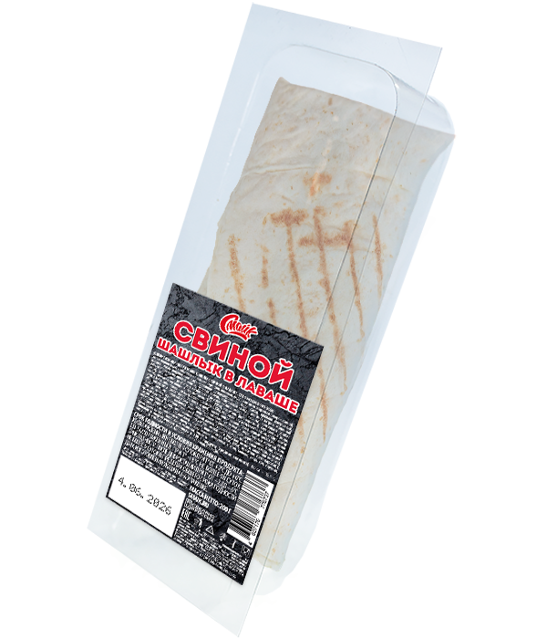

Шашлык свиной в лаваше

Состав:
лаваш, свинина жаренная, соус.
Масса нетто:
200 г.
Пищевая и энергетическая ценность в 100 г продукта (средние значения):
Белки
– 15,3 г.
Жиры
– 10,3 г.
Углеводы
– 22,0 г.
Калорийность
– 250 ккал / 1050 кДж.
Закрыть окно